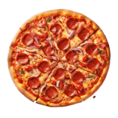
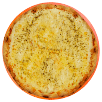
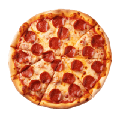
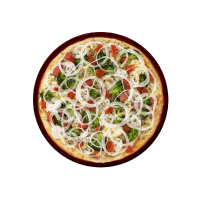

Populares  Calabressa R$99,99 plus Created with Sketch Beta.  Quatro Queijos R$99,99 plus Created with Sketch Beta. Portuguessa R$99,99 plus Created with Sketch Beta.
Sabores  Peperroni R$99,99 plus Created with Sketch Beta.  Vegetariana R$99,99 plus Created with Sketch Beta. Vegetariana R$99,99 plus Created with Sketch Beta. Vegetariana R$99,99 plus Created with Sketch Beta. Vegetariana R$99,99 plus Created with Sketch Beta. Calabressa R$99,99 plus Created with Sketch Beta. Quatro Queijos R$99,99 plus Created with Sketch Beta. Portuguessa R$99,99 plus Created with Sketch Beta.